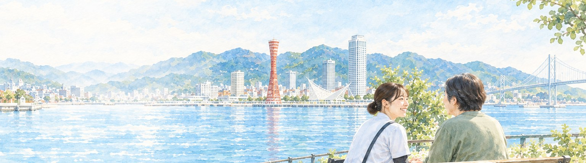
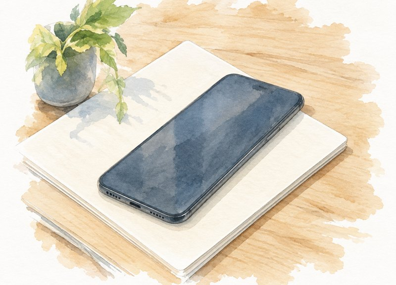
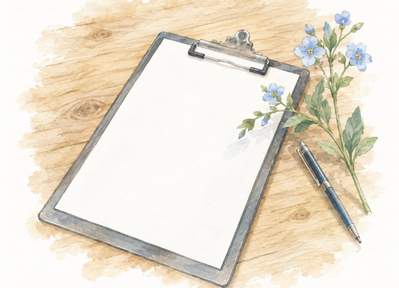
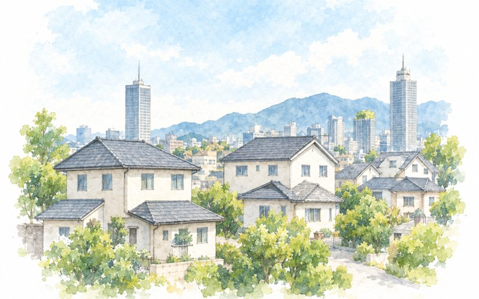
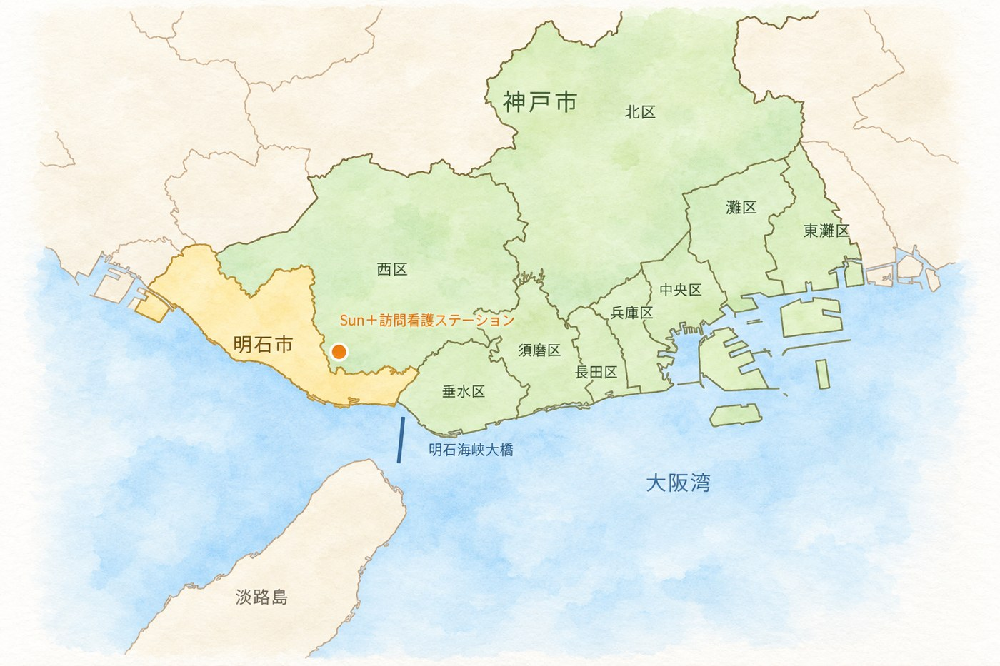
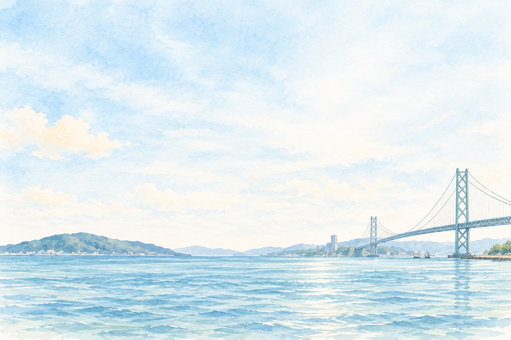

精神科に特化した訪問看護ステーション
住み慣れた神戸で、
あなたらしい毎日を。あなたらしい毎日を、
住み慣れた神戸で。
神戸市・明石市の精神科訪問看護
なじみのある場所、たいせつな人たち。
そのつながりの中で、こころが少し軽くなるように。
私たちは、訪問看護を通して、あなたらしい暮らしを支えます。
こころの不調があっても、
住み慣れたこの街で、
自分らしく暮らしていけるように。
私たちは、あなたのそばで
支えていきます。
いつもの暮らしに、
そっと、よりそう。
この街で、
また、笑顔で。
お知らせ
私たちについて
こころの健康が、
その人らしい暮らしの土台です。
Sun＋訪問看護ステーションは、精神科に特化した訪問看護ステーションです。
神戸市・明石市を中心に、ご自宅での生活を支え、安心して暮らせる地域づくりに貢献します。
私たちは、ひとりひとりの想いに寄り添い、ともに歩み続けます。
ひとりじゃない。
ここに、つながる場所がある。
訪問看護でできること
こころの不調があっても、
住み慣れた場所で、自分らしく暮らしていけるように。
私たちは、日々の生活に寄り添いながらサポートします。
ご利用の流れご利用までの流れ
はじめての方でも安心してご利用いただけるよう、丁寧にご案内します。
はじめての方でも安心してご利用いただけるよう、
シンプルな流れでご案内しています。
- 01

ご相談
まずは、お気軽にご相談ください。現在の状況やご希望をうかがいます。
- 02
お打ち合わせ
担当者がご自宅などへ訪問し、サービス内容をていねいにご説明します。
- 03

ご利用の準備
主治医の指示書をもとに計画を作成し、関係機関との連携を行います。
- 04

訪問スタート
計画に基づき訪問看護を開始し、継続的にサポートしていきます。
- 01
ご相談
まずは、お電話またはお問い合わせフォームからお気軽にご相談ください。
- 02
お打ち合わせ
スタッフがご自宅に訪問し、現在の状況やご希望をうかがいます。
- 03
ご利用の準備
主治医の指示書をもとに計画を作成し、関係機関と連携します。
- 04
訪問スタート
ご本人・ご家族の同意のもと訪問看護を開始し、安心して暮らせる毎日を支えます。
対応エリア

このまちで、
あなたのそばに。
ひとりで抱え込まず、
まずはお気軽にご相談ください。
どんな小さなことでも構いません。
あなたやご家族の想いに、私たちが耳を傾けます。
今日より、
少しあたたかな明日へ。
